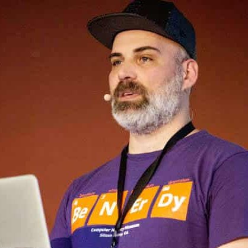

AmsterdamJs
The largest and longest-running JavaScript community in town
Apart from friendly evening meetups, starting from 2017 we kick-off an annual JavaScript Conference in the heart of The Netherlands, with the first edition coming on 8th of June! Call for papers is open until 31st of March
First dedicated JavaScript conference in Amsterdam
Taking our biggest and longest-running JavaScript community forward, we're adding a new event to our
family - a full-day conference covering the latest and greatest news and insights from the
global JavaScript network.
Join us and a group of internationally known JavaScript enthusiasts to share inspiration and spend a
great, summer day in one of the most unique Amsterdam locations.
Early bird tickets already sold-out, regular batch tickets will be available on sale from 3rd or April. Follow us for updates to get notified about line-up changes and workshop announcements.
Plantage Middenlaan 45
1018 DC Amsterdam
The Netherlands
First speakers
-
Christian Heilmann
Microsoft, London
When you look at the JavaScript world these days you can get disheartened. On the one side there is an overwhelming offer of things you should know but are "considered harmful" by the time you have a chance to look at them. On the other side you have fire and brimstone talks about how relying on JavaScript makes you a terrible person. Let Chris set your mind at ease. Things aren't that grim or complicated.
-
Michael Stanton
Google, Munich
Senior Software Engineer in V8 will share some insights on a new compiler pipeline and a unified approach to collecting feedback about your application. "I’ll explain how we do it and present some problems. For example, in complex systems, facile "solutions" often distort the environment in unexpected ways. Welcome to the jungle *__*"
-
Simona Cotin
Arista Networks, Dublin
Managing state in large application applications is hard. Managing async behavior is even harder. Let's talk about why reactive programming is awesome and how it can help with managing complexity, data and scaling your applications. Also, remember the callback hell?! Well, we once have been PROMISED that all will be good. And guess what, we OBSERVED we can do better. Let's deep dive into how observables are much better than promises.
-

Dustin Whittle
Uber, San Francisco
Join this session for a deep dive on how Uber leverages javascript across its engineering orgs. From building frontend properties with a full javascript stack using express and react to the tools and infrastructure we use to automate best practices.
-
Phil Nash
Twillio, London
You've probably heard of the magic of a Service Worker when a user is offline, but what can we do for them when they get back online? We can take advantage of the Service Worker's life outside of the page and start to perform actions in the background.
-
Denis Radin
Liberty Global (Ziggo), Amsterdam
Virtual Reality is a powerful trend which is not that related to front-end development so far, however it would be beneficial for both technologies to have a possibility to put existing Web applications into virtual worlds. Talk is about approaches you might take to drop your existing Web app into VR in order to provide new experiences for customers and get some fun for yourself
-
Ahmed El Gabri
Lightspeed, Amsterdam
Refactoring or changing an API of a lib you maintain might not be a fun task. But sometimes it is required. If you are going to do it anyway, you don't want to do this manually anyway. So with the power of ASTs & codemods you can automate this & have confidence in the result
-
Daijirō Wachi
Node School, Amsterdam
In the global OSS community, it often takes a time to solve users' problems, due to the differences of the time, language, environment and something the other things. The important thing in order not to waste time is to reduce the number of conversational balls at the issue thread. Daijiro will explain what we can do for them by referring to localization communities, tools, and npm doctor.
-

Gerard Sans
Freelance, London
Observables has been very popular because of his many qualities: asynchronous processing, composition, performance, powerful operators but usually there's a less covered feature that lies beneath. That is: Schedulers. In this talk we are going to cover Schedulers in depth going from the basic APIs to more obscure features to bend time to our will!
-
Join the club!
submit proposal